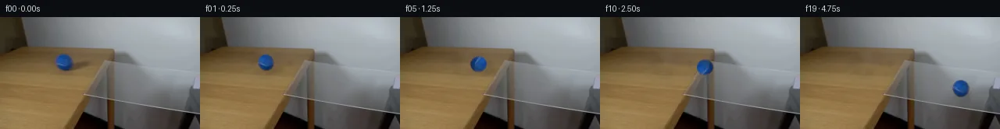

![首帧]()

Round 00
2026-11-04T21:16:16.058669+00:00像素候选变化代码 +165/−0inspection 更新
pixels 34608441b1b7d8ad · code 3d634e691d95968d
查看本轮 generate.py 真实 diff
--- previous/generate.py
+++ current/generate.py
@@ -0,0 +1,165 @@
+#!/usr/bin/env python3
+"""Generate the 20-frame PixelWorld continuation using local pixel operations."""
+
+from pathlib import Path
+
+import cv2
+import numpy as np
+from PIL import Image, ImageDraw, ImageFilter
+
+from artifact_io import save
+
+
+ROOT = Path(__file__).resolve().parent
+W, H = 256, 144
+
+
+def clean_background(source: np.ndarray) -> np.ndarray:
+ """Remove the source ball/shadow while retaining low-amplitude wood grain."""
+ # The mask covers the photographed ball and its soft right-cast tabletop shadow.
+ mask = np.zeros((H, W), np.uint8)
+ cv2.circle(mask, (82, 58), 13, 255, -1, cv2.LINE_AA)
+ cv2.ellipse(mask, (94, 61), (20, 8), 5, 0, 360, 255, -1, cv2.LINE_AA)
+ mask = cv2.GaussianBlur(mask, (3, 3), 0)
+
+ # Telea supplies the broad illumination. A subdued residual copied from an
+ # adjacent clean strip restores the photographed horizontal wood texture.
+ base = cv2.inpaint(source, mask, 4, cv2.INPAINT_TELEA).astype(np.float32)
+ smooth = cv2.GaussianBlur(source, (0, 0), 3.0).astype(np.float32)
+ residual = source.astype(np.float32) - smooth
+ shifted = np.zeros_like(residual)
+ shifted[:, 68:116] = residual[:, 28:76]
+ feather = cv2.GaussianBlur(mask.astype(np.float32) / 255.0, (0, 0), 2.0)[..., None]
+ base += shifted * feather * 0.42
+ return np.clip(base, 0, 255).astype(np.uint8)
+
+
+def source_ball_rgba(source: np.ndarray) -> Image.Image:
+ """Extract an antialiased circular sprite from the photographed blue ball."""
+ cx, cy = 82.0, 58.0
+ x0, y0, size = 68, 44, 29
+ patch = source[y0:y0 + size, x0:x0 + size].copy()
+ yy, xx = np.mgrid[0:size, 0:size]
+ dist = np.sqrt((xx - (cx - x0)) ** 2 + (yy - (cy - y0)) ** 2)
+
+ # Radial geometry includes the dark contact edge that a pure blue-key would
+ # miss. Blue dominance suppresses any remaining wood-colored edge pixels.
+ radial = np.clip((11.2 - dist) / 1.35, 0.0, 1.0)
+ blue_score = patch[..., 2].astype(np.float32) - np.maximum(
+ patch[..., 0], patch[..., 1]
+ ).astype(np.float32)
+ chroma = np.clip((blue_score + 12.0) / 28.0, 0.0, 1.0)
+ alpha = radial * np.maximum(chroma, radial * 0.76)
+ alpha[dist <= 8.8] = 1.0
+ alpha = cv2.GaussianBlur(alpha.astype(np.float32), (3, 3), 0.42)
+
+ rgba = np.dstack([patch, np.clip(alpha * 255, 0, 255).astype(np.uint8)])
+ return Image.fromarray(rgba, "RGBA")
+
+
+def add_shadow(layer: Image.Image, center: tuple[float, float], on_glass: bool) -> None:
+ """Composite a soft contact shadow appropriate to wood or transparent glass."""
+ cx, cy = center
+ shadow = Image.new("RGBA", (W, H), (0, 0, 0, 0))
+ d = ImageDraw.Draw(shadow)
+ if on_glass:
+ # The shadow on clear glass is tight and pale; a faint blue reflection is
+ # displaced down the pane and remains transparent enough to show the room.
+ d.ellipse((cx - 8, cy + 6, cx + 11, cy + 11), fill=(30, 42, 48, 42))
+ d.ellipse((cx - 6, cy + 10, cx + 7, cy + 15), fill=(25, 78, 132, 15))
+ blur = 2.1
+ else:
+ d.ellipse((cx - 7, cy + 5, cx + 23, cy + 12), fill=(35, 30, 24, 58))
+ d.ellipse((cx - 5, cy + 6, cx + 9, cy + 10), fill=(26, 25, 23, 48))
+ blur = 3.0
+ layer.alpha_composite(shadow.filter(ImageFilter.GaussianBlur(blur)))
+
+
+def render_ball(sprite: Image.Image, angle: float, scale: float = 1.0) -> Image.Image:
+ """Rotate the photographed surface texture inside its spherical silhouette."""
+ rotated = sprite.rotate(angle, resample=Image.Resampling.BICUBIC, expand=False)
+ if abs(scale - 1.0) < 1e-6:
+ return rotated
+ side = max(1, int(round(rotated.width * scale)))
+ return rotated.resize((side, side), Image.Resampling.LANCZOS)
+
+
+def make_transition_check(frames: np.ndarray) -> Image.Image:
… diff truncated; 78 more lines …